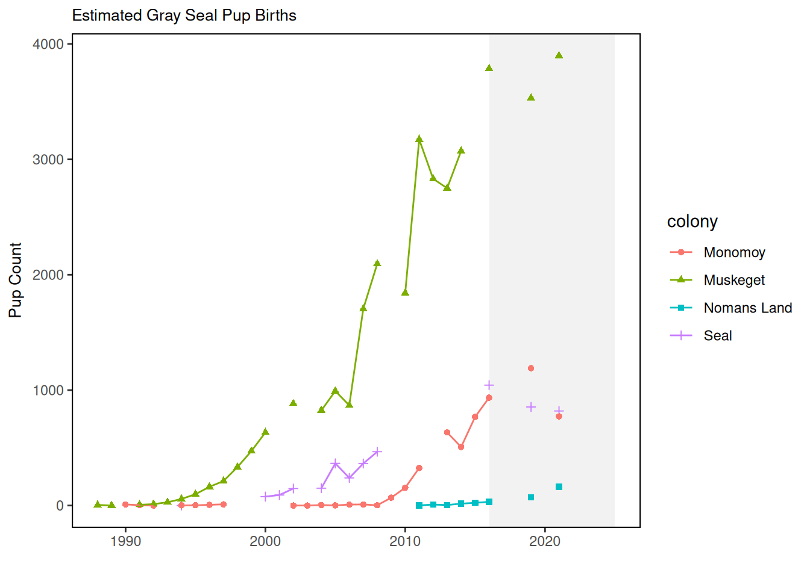

34 Gray Seal Pups
Last updated March 07, 2025
Description: The data presented here are counts of gray seal pups at 4 U.S. haulout sites from 1988 to 2021.
Contributor(s): Stephanie Wood
Affiliations: NEFSC
Indicator Family:
Indicator Category:
Synthesis Theme:
34.1 Introduction to Indicator
Gray seals were extirpated from the northeast U.S. coast by the mid-20th century due to local and statewide bounty systems [56,57]. Since the late 1980s, ground and aerial surveys have documented the recovery and recolonization of pupping sites in northeast U.S. waters [58]. This recovery is due in large part to the protection provided by the Marine Mammal Protection Act (MMPA) of 1972.
34.2 Key Results and Visualizations
The increase in bycatch of gray seals since 1995 corresponds to an increase in numbers of gray seals in U.S. waters, which has risen dramatically in the last three decades. Based on a survey conducted in 2021, the size of the gray seal population in the U.S. during the breeding season was approximately 28,000 animals, while in Canada the population was estimated to be roughly 425,000. The population in Canada is increasing at roughly 4% per year, and contributing to rates of increase in the U.S., where the number of pupping sites has increased from one in 1988 to nine in 2019. Mean rates of increase in the number of pups born at various times since 1988 at four of the more data-rich pupping sites (Muskeget, Monomoy, Seal, and Nomans Land) ranged from no change on Nomans Land to high rates of increase on the other three islands, with a maximum increase of 26.3% (95%CI: 21.6 - 31.4%; [59]).
Mid-Atlantic

New England

34.3 Implications
These high rates of increase in gray seal pups born at US pupping sites provide further support for the hypothesis that seals from Canada are continually supplementing the breeding population in U.S. waters.
34.4 Indicator statistics
Spatial scale: Haul out sites off New England (Maine to New York) that correspond roughly to EPU’s Gulf of Maine (GOM) and Mid-Atlantic Bight (MAB).
Temporal scale: Annually 1988 to 2021. Survey is in January that corresponds to the gray seal pupping season.
Variable definitions
34.5 Get the data
Point of contact: Stephanie Wood (Stephanie.Wood@noaa.gov), Kristin Precoda (Kristin.Precoda@noaa.gov)
ecodata dataset: ecodata::seal_pups
Tech Doc link: https://noaa-edab.github.io/tech-doc/seal_pups.html
34.5.1 Public Availability
Source data are NOT publicly available.
34.5.2 Accessibility Constraints
Reach out to Stephanie Wood (stephanie.wood@noaa.gov) for data.